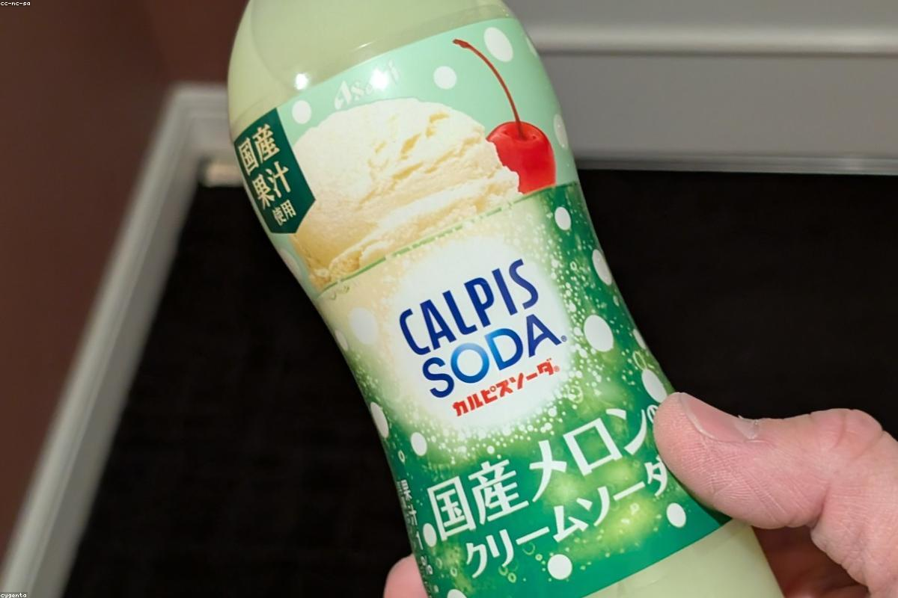
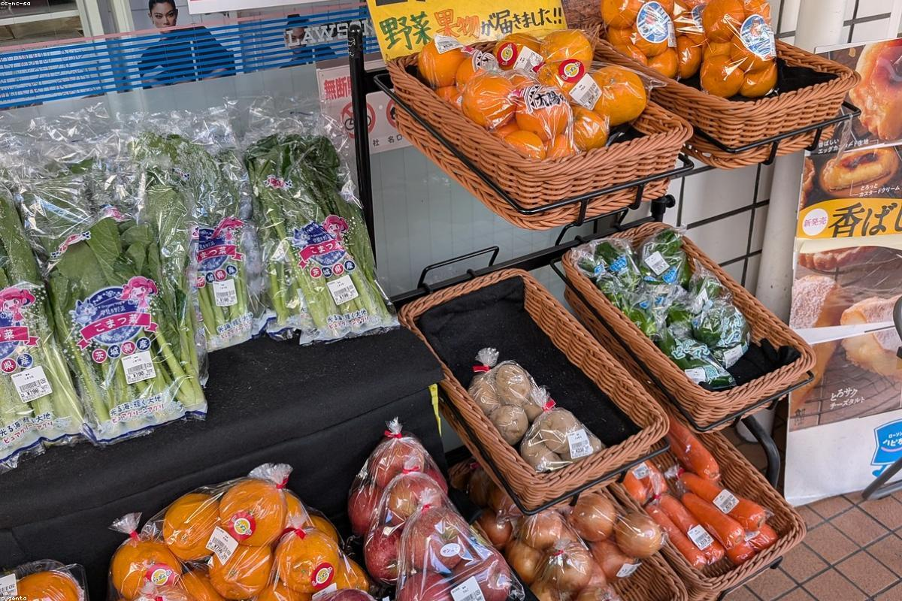

Японский минимализм, наваристый бульон томлёный 12 часов и пятнадцать видов рамена. Место, где торопиться некуда — есть только пар над пиалой.
«Фуку» по-японски — счастье и удача. Мы открыли наш рамен-бар на Пискунова, чтобы в центре шумного Нижнего появился островок тишины, где главное действие — это пар, поднимающийся над горячим бульоном.
Интерьер мы собрали из тёмного дерева, тёплого света и красных акцентов — ничего лишнего. Бульоны томим всю ночь, лапшу замешиваем каждое утро, а специи и мисо везём напрямую. Здесь не торопят: садитесь у барной стойки, наблюдайте за поварами и позвольте себе медленный обед.


«Лучший тонкоцу в городе, без преувеличения. Бульон густой, лапша идеальная, яйцо с жидким желтком — мечта. Атмосфера тихая, не хочется уходить.»
«Зашли случайно, остались постоянными гостями. Спайси красный — для любителей огонька то, что нужно. Персонал спокойный и внимательный.»
«Очень аутентично и при этом уютно. Веган-рамен на грибах удивил глубиной вкуса. Матча-латте и моти — отдельный повод вернуться.»
Нижний Новгород,
ул. Пискунова, 14
В пяти минутах от площади Минина. Ищите красный фонарик 福 над входом.
Нижний Новгород,
ул. Пискунова, 14
Пн–Чт 12:00–23:00
Пт–Вс 12:00–00:00